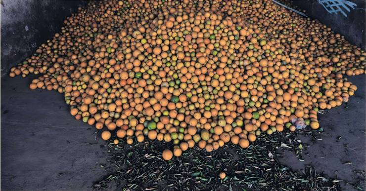
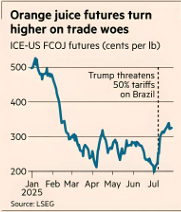

MICHAEL POOLER — SAO PAULO
BEATRIZ LANGELLA — LIMEIRA


President Donald Trump’s threat to slap a 50 per cent import tax on goods from Brazil has sparked anxiety in the country’s farms and ranches over the potential damage to its world-leading shipments of orange juice, coffee and beef.
The Latin American nation is the biggest global exporter and the main foreign supplier to the US of all three agricultural commodities.
As the August 1 deadline for the tariffs to be imposed approaches, there is alarm among producers over the impact on sales and warnings that US shoppers will end up paying more for the everyday staples.
“Everyone is afraid of the American tariff,” said Rodrigo Pereira, commercial director of Laranja Boschiero, an orange grower in Limeira, a municipality in Sao Paulo state famous for the fruit.
Brazil, overwhelmingly the biggest global exporter of orange juice, provides about 70 per cent of the beverage drunk in the US, according to the Cepea research institute at the University of Sao Paulo.
“The US is absolutely important,” Pereira said. “They need juice from Brazil and we need the American market.”
Laranja Boschiero has frozen hiring and investments in preparation for a possible hit to revenues.
Farmers and processors of the affected produce worry that, if exports to the US fall, the result could be a domestic glut. Brazilian wholesale prices for orange juice, coffee and beef have all fallen in July, according to Cepea, threatening a double blow.
Yet trade talks are complicated by the politicised nature of Washington’s complaints.
Trump was clear in his letter to Luiz Inacio Lula da Silva, Brazil’s leftwing president, that the 50 per cent tariff — higher than the rate imposed on most other trading partners — was due in part to a “witch-hunt” against Jair Bolsonaro, Brazil’s former rightwing president who is on trial for allegedly plotting a coup.
The US president also hit out at Brasilia’s “unfair” trading practices, even though — unlike many other countries targeted by Trump — Brazil runs a trade deficit with the US.
Citrus industry association CitrusBR said Brazil’s orange juice exports to the US, worth $1.3bn in the annual harvest ended in June, could be rendered “unviable” by Trump’s tariff. It added that the new levy would result in a more than sixfold rise of an existing duty charged at $415 a tonne.
Even observers with less drastic prognoses foresee detrimental effects.
“Demand might come down a bit if the tariffs are implemented,” said Andrés Padilla, analyst at Rabobank. “But Brazil is such a strategic supplier, it’s not like the US can say ‘let’s stop buying from them’.”
New Jersey-based orange juice importer Johanna Foods is suing the Trump administration over the tariff, arguing that it will cause supermarket price increases of 20 to 25 per cent.
The price of the juice on New York’s Intercontinental Exchange has risen 16 per cent since Trump promised the levy against Brazil on July 9.
The tariff threat is also rippling out into coffee. Brazil’s shipments to the US were worth about $2.2bn over the past year, according to the Office of Economic Complexity.
Florida-based buyer Lucatelli Coffee, which specialises in beans from Brazil, has been rushing to find alternative sources in Central America and Africa while attempting to redirect containers with Brazilian cargoes so they land before August 1.
Chief executive Steven Walter Thomas said the 50 per cent duty would push up coffee prices across the board and could dent US consumption. “For most American roasters, Brazilian coffee is like flour in a cake,” he said. “US businesses are the ones that are going to pay this tariff. Then it’s passed to the roaster, the retailer and then the consumer.”
He added: “There’s going to be a demand degradation where [Americans] start sipping slower and buying less.”
Prices for arabica beans, which are used in higher-end brews and make up the bulk of Brazilian output, had been falling in recent months but then rose after Trump sent his tariff letter.
Given the huge international trade in coffee, there are other potential destinations for diverted Brazilian beans. But Ademar Pereira, a third-generation coffee farmer in the small mountain town of Caconde in Sao Paulo state, is apprehensive.
“We will lose competitiveness, without a shadow of a doubt,” he said. “We don’t know what to do to find economically viable alternatives.”
With the high cost of meat pinching US household budgets, the nation’s love of steak may also come under further pressure.
Brazilian beef already faces a 26.4 per cent tariff in the US above a modest import quota that it shares with nine other countries. Even so, rising shipments made it the biggest source of overseas supply this year between January and May, according to commodities brokerage StoneX.
Larissa Alvarez, analyst at StoneX, said the extra duty would “severely undermine” Brazil's ability to compete. “For US consumers, that means paying more at a time when beef prices are already at historic highs,” said Alvarez.
Back in Limeira, the fear is that Trump’s tariffs will rebound on the municipality’s role in Brazil’s vast citrus industry. Over the years, its farmers have come to focus on supplying orange saplings to producers in other states with the fruit sent back to Limeira for processing and export.
“We imagine there will be a cascading effect,” said mayor Murilo Felix. “It’s a feeling of complete worry.”